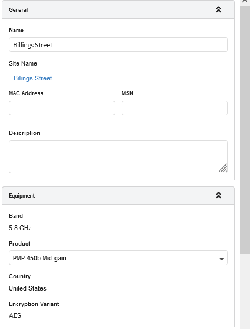
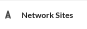

Click on Golf Club: 000 PMP Network Device. This displays all the properties of the PMP Network Device.
The PMP Network Devices page has 7 sections, namely General, Equipment, Product Configuration, Antenna Configuration, Power, Links to Subscriber Modules and Performance Summary.
Click on a section header to expand/collapse the section.
Click on the General Section. This shows Name, Latitude/Longitude info, MAC Address, MSN and Description.
Click on Equipment section. Enter the details below:
Band: 5.8 GHz
Product: PMP450i
Country: United States
Sync Input: Generate Sync
Encryption Variant: AES
PMP Network Devices General and Equipment Configuration¶
Click on the Product Configuration section. Enter the details below:
Click which is on the left side of the in the left panel of the page.
This displays the PMP Network Device added to the project.
Click on Golf Club: 090 PMP Network Device. This displays all the properties of the PMP Network Device.
In the Links to Subscriber Modules section, click the button. The Attach Subscribers Window is displayed. Select the Subscriber Sites to be connected to the Network Device.
Click which is on the left side of the in the left panel of the page.
This displays the PMP Network Device added to the project.
Click on which is on the left side of the Golf Club : 090 PMP Network Device. This lists all the Subscriber Module attached to the Network Device.
Click on Billing Street. This displays all the properties of the Subscriber Module.
Subscriber Modules properties are categorized under 8 sections, namely General, Equipment, Product Configuration, Antenna Configuration, Power Profile, Performance Summary and Performance Details.
Click on General section. This shows Name, Latitude/Longitude info, MAC Address, MSN and Description.
Click on Equipment section. Enter the details below,
Band: 5.8 GHz (read only)
Product: PMP450b Mid-gain
Country: United States (read only)
Encryption Variant: AES (read only)

Subscriber Module General and Equipment Configuration¶
Click on Product Configuration section. Enter the details below:


 on the right panel of the page.
on the right panel of the page.
which is on the left side of the  in the left panel of the page.
on the right panel of the project window. This opens the Network Device Mode window.
in the left panel of the page.
on the right panel of the project window.

button. The Attach Subscribers Window is displayed. Select the Subscriber Sites to be connected to the Network Device.
to update Antenna parameters after changing SM antenna height